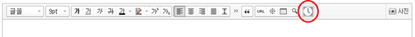

UI 추가
새로운 기능에 필요한 UI를 추가하는 방법은 다음과 같다.
이미지 추가
툴바에 삽입할 버튼으로 사용할 이미지 파일(21 x 21 px의 PNG 파일)은 /img 폴더에 저장한다. 해당 버튼 이미지를 사용하도록 다음과 같은 내용을 /css/smart_editor2.css 파일에 추가한다.
#smart_editor2 .se2_text_tool .se2_clock { background:url("../img/clock.png") no-repeat };
툴바 버튼을 삽입하는 코드를 작성한다. 다른 SmartEditor2 플러그인으로 사용하려면 다음과 같은 마크업 규칙을 준수해야 한다.
- 버튼은 li 요소 안에 있어야 하며, li > button > span의 구조를 이루어야 한다.
- 버튼을 추가하는 li 태그의 클래스 이름에는 huskyseditor_ui가 앞에 붙어야 한다.
다음은 위 규칙에 따라 새로운 버튼의 HTML 코드를 작성한 예이다.
<li class="husky_seditor_ui_TimeStamper">
<!-- 버튼 -->
<button type="button" title="현재 시간 삽입" class="se2_clock"><span>시간</span></button>
</li>
2.2.1 이상 버전을 사용하는 경우 다음 HTML 코드와 같이 span 태그의 클래스를 "_buttonRound"로 지정해야 한다.
<li class="husky_seditor_ui_TimeStamper">
<!-- 버튼 -->
<button type="button" title="현재 시간 삽입" class="se2_clock"><span class="_buttonRound">시간</span></button>
</li>
이 클래스는 라운딩 처리될 버튼을 표시한다. 이에 대한 자세한 내용은 "툴바 버튼 라운딩 처리 규칙"을 참고한다.
레이어 추가
버튼을 추가한 위 HTML 코드에 button 태그 다음에 버튼을 클릭했을 때 화면에 표시할 레이어를 추가한다(버튼을 클릭했을 때 레이어가 나타나지 않는 경우에는 이 부분을 생략한다). 이때 div 태그의 클래스에는 se2_layer라는 구분자와 해당 레이어의 구분자(husky_seditor_TimeStamper_layer)를 할당한다. display 속성의 값은 none으로 설정한다.
<li class="husky_seditor_ui_TimeStamper">
<!-- 버튼 -->
<button type="button" title="현재 시간 삽입" class="se2_clock"><span class="_buttonRound">시간</span></button>
<!-- 레이어 -->
<div class="se2_layer husky_seditor_TimeStamper_layer"
>
<div>
<input type="button" value="Insert Date" class="se_button_time">
</div>
</div>
</li>
위에서 작성한 코드를 SmartEditor2Skin.html 파일에 삽입한다. 툴바를 구성하는 div의 클래스는 "husky_seditor_text_tool"이다. div 요소 안에서 버튼을 추가하고 싶은 위치의 ul 요소 안에 위 코드를 삽입하거나 새로운 ul 태그를 추가하고 그 안에 삽입한다. 단, "se2_font_type" 클래스를 갖는 ul 태그 안에는 추가하면 안 된다. 여기에서는 찾기/바꾸기 버튼 뒤에 삽입한다.
<div class="se2_text_tool husky_seditor_text_tool">
<ul class="se2_font_type">
… 이 부분에는 버튼을 추가하지 않는다 …
</ul>
<ul>
… 생략 …
<li class="husky_seditor_ui_findAndReplace">
… 생략 …
</li>
</ul>
<!-- 새로운 버튼 추가 -->
<ul>
<li class="husky_seditor_ui_TimeStamper">
<!-- 버튼 -->
<button type="button" title="현재 시간 삽입" class="se2_clock"><span class="_buttonRound">시간</span></button>
<!-- 레이어 -->
<div class="se2_layer husky_seditor_TimeStamper_layer"
>
<div>
<input type="button" value="Insert Date" class="se_button_time">
</div>
</div>
</li>
</ul>
<!-- //새로운 버튼 추가 -->
… 생략 …
</div>
위와 같이 코드를 작성했을 때 에디터 툴바의 모습은 다음과 같다.

그림 39 버튼을 추가한 에디터 툴바 화면